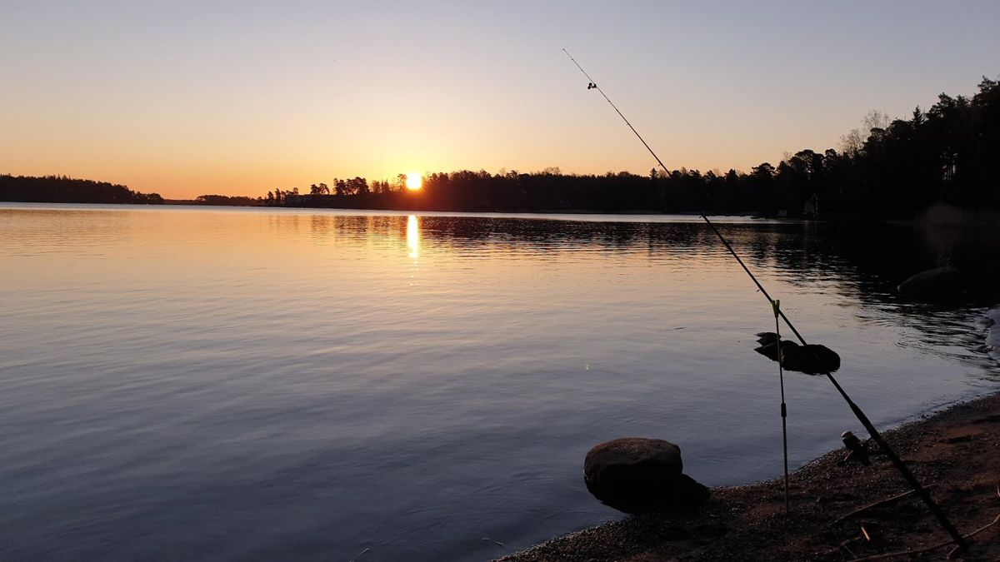
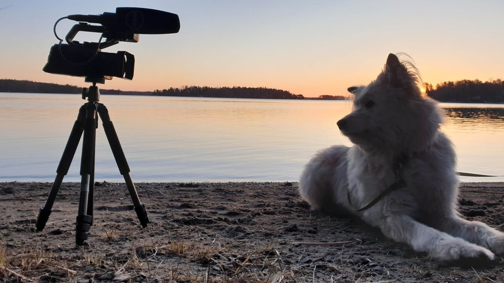
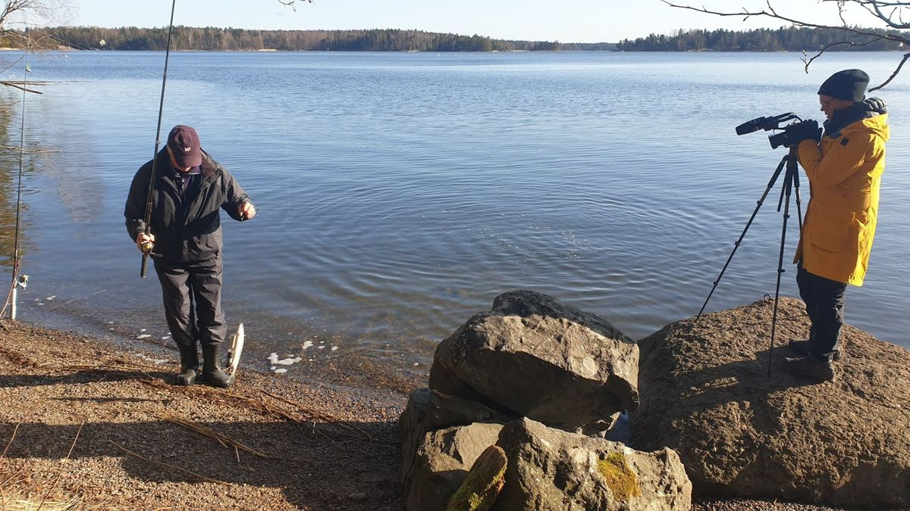
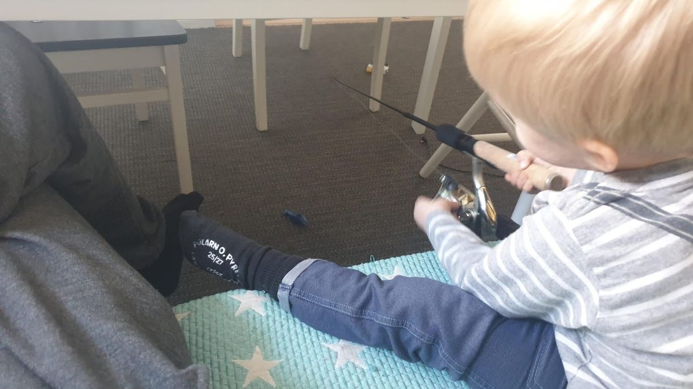

Blogitekstit · Huhtikuu 2020
Siikaongella Laajasalossa - uudet tuttavuudet

Kävin kokeilemassa perjantaina haukipisteen saamista Laajasalossa kun tilaisuus loppuperheen kyläillessä tämän mahdollisti. Tunnetusti munat meni pataan. Yritin saada haukea työkaveri Millan antamilla suurhaukivieheillä, MC rubberilla ja Daiwan Lacy Shadillä, jälkimmäinen jäi jonnekin vastarannan kaisloihin.
Suurhaukien kalastaja en ole kuten välineetkin sen kertovat. Kelana oli baitrunner-kela, joka on käytössä suurempien kalojen pohja -ja täkyonginnassa, vapa kyllä menee täysin näissä hommissa.
Tyhjän kalastamisen jälkeen olin purkamassa välineitä ja pakkaamassa niitä autoon kun takaani kuului naisen ääni;
Oletko kalalle menossa?
En. Vastasin. Jatkoimme keskustelua ja selvisi, että rouva on Saara Rantanen, toimittaja MTV:stä.
Etsin kalastajaa kenen kanssa pääsisin siikaongelle. Juttelin aiheesta jo Svk:n toiminnanjohtajan kanssakin, jatkoi toimittaja.
Ai Olli Saaren, tunnen herran. Keskustelu eteni kuten olettaa saattaa, lupasin palata aikatauluun sn jälkeen kun olin ensiksi jutellut aikataulusta vaimoni kanssa. Illalla lähetin tekstarin;
Viideltä rannassa.
Sovimme paikaksi Aittasaaren pienen hiekkarannan Laajasalossa. Rannalla hän oli nähnyt viikolla siianonkijoita saavan saalista. Itse en aikaisemmin kyseisellä rannalla ole käynyt, joten paikka sopi myös minulle.
Tiesin myös, että viedessäni toimittajan Helsingin tai Espoon suosituimmille siikapaikoille, voisi palautetta tulla tutuilta sekä tuntemattomilta.


Voiko ihanammin päivä enään alkaa, onko ihanampaa aamua kuin tää. Istuin yksin täysin tyynen meren rannalla, mustarastas ja talitiaiset herättivät hiljaisin sulosävelin ympäröivää urbaania kaupunkimetsää uuteen päivään.
Tapsit kiinni leikareihin ja vavan pyyntiin. Koirani Nemo etsi itselleen sopivan kohdan johon köllähti nauttimaan lintujen laulusta. Vapoja virittäessä myös Saara saapui rannalle.


Auringon ensisäteet nousivat Puuskaniemen metsän siimeksen läpi. Pieni harvempi kohta horisontin siluetista tarjosi säteille oivan raon valaista aamuamme. Itselleni tärkeää kalastuksessa on nautinto, se tunne kun tiedät ettei tarvitse saada mitään retken ollakseen onnistunut.
Hetki rauhoittumista keskellä etätyön- ja koulun, tässä merta tuijottaessa mieli lepää. Unohtuu hetkeksi arjen hektisyys.
Saan käsiini mikrofonin, MTV lukee mustassa tuulisuojassa näkyvästi.
"Pidä sinä mikkiä, näin näytämme katsojille ettemme ole lähikontaktissa haastateltavien kanssa, ohjeistaa kameran takana touhuava toimittaja."
Koronavirus eli virallisemmin COVID-19 on pakottanut monia sopeutumaan työpaikoilla, näin myös maikkarin toimittajien.
Aikaisemmin mukana kulki erikseen kuvaaja ja leikkauksen teki leikkaaja. Nyt juttukeikkoja tehdään minimi väellä, molemmat työvaiheet kuuluvat nykyään toimittajan työnkuvaan.
Samassa kun Saara on siirtynyt kameran taakse ja olemme aloittamassa haastattelua tapahtuu jotain. Vasemmanpuoleinen vapa niistä ja vavan tyvi nousee ilmaan, ryntään vavan luokse ja Nemo päättää tehdä samoin. Reppujakkarani lentää siihen kiinnitetyn flexin päässä pitkin hiekkarantaa Nemon vetämänä.
Kala!
Siiman päässä tuntuu potkuja, joko nyt se kauan kaivattu siika nousee rannalle. Kelaan pitkälle heitettyä syöttiin tarttunut saalista kohti rantaa, jokainen kelan kammen pyörähdys tuo saalis lähemmäksi muistikortille tallennusta.
Lopulta kalan hahmo erottuu hiekkapohja vasten, ahven. Ei tavoite laji, mutta kelpo ruokakaloja. Tämä lähtee äidille eräksi.


Nuoret kalamiehet Laajasalosta Niko ja Onni saapuivat myös rannalle rupattelemaan. Nopeasti kävi selville, että pojat ovat kalastaneet saaren ympäristössä useampia vuosia eikä kalatarinoita näiltä rannoilta tarvinnut kauaa odotella.
Seuraamme liittyi myös vanhempi herra. Tottunein ottein virittyi nopeasti kolme vapaa pyyntiin. Virittämisen jälkeen mies hävisi metsän uumeniin niin kutsuttuun Hotelli Helpotukseen.
Kilikili, reunimmaisen vavan kilikello ilmoitti. Tasaisesti kiihtyvä kilinä oli merkki, että kala on kiinni koukussa.


Tätä tekstiä kirjoitellessani vieressä poika kelaa leikkikalaa virvelillä huutaen;
Kala, Kala...
Välillä saalis uiskentelee Nemon juomakupissa...
Kokonaisuudessaan kuvatun ja kirjotetun jutun siikaretkestämme voit lukea ja katsoa maikkarin nettisivuilta. Klikkaa tästä ja näe kuinka reppujakkara ja kalastaja kiitää pitkin Laajasalon hiekkarantaa.
Seuraa ennätyksen etenemistä
Pidän kirjaa lajilistasta ja tarkemmasta retkidatasta Google -taulukossa, joka löytyy jokaisesta ennätysyrityksen postauksesta. Tästä linkistä taulukko avautuu uuteen ikkunaan.
Seurantatilanne löytyy myös blogini oikeasta yläreunasta.
Vuoden aikana ennätysyrityksessä kulkee mukaan myös tämä kalataitelija-graaffikko Sakke Yrjölän suunnittelema SPECIES FIN 53 -merkki.
Paitakulmassa painatin pipoon ja lippikseen saman merkin. Tavoitteeni on saada aikaiseksi 53 saaliskuvaa tekstin alussa tekemääni taulukkoon joissa kaikissa kuvissa näkyisi tuo kyseinen tunnus.
Paitakulma on Suomalainen perheyritys, joka haluaa panostaa laatuun ja asiakastyytyväisyyteen. Tutustu yrityksen palveluihin tästä.